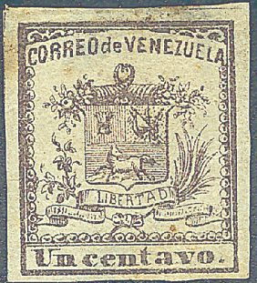
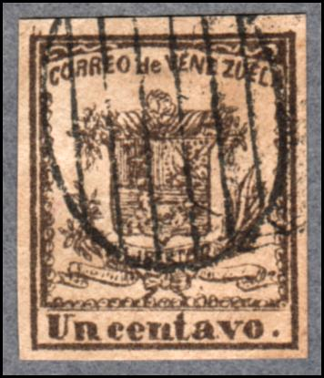

Presumably genuine stamps.
Return To Catalogue - Venezuela - miscellaneous
Note: on my website many of the
pictures can not be seen! They are of course present in the
catalogue;
contact me if you want to purchase it.
Check out the excellent website on Venezuelian stamps, its locals and forgeries http://www.mystamps.net, made by Williams Castillo. I would like to thank him for setting some of the information available to me.

Presumably genuine stamps.
Twelf different kinds of forgeries are known. Among them with inscription "CORREO VENEZUELA" instead of "CORREO DE VENEZUELA" exist. A bogus value of 1 real also exists (sorry, no picture available yet).
In the genuine cuarto and medio stamps, a dot can be found between the two outer frame lines behind the "A" of "VENEZUELA". In the next table the number of pearls at the left hand side, the bottom and right hand side can be found for the three values:
| Number of pearls | |||
| value | left | bottom | right |
| 1/4 c | 16 | 16 | 19 |
| 1/2 c | 15 | 17 | 18 |
| 1 c | 15 | 16 | 18 |
More information can be found on http://www.mystamps.net/venezuela/identificacion/escudos02.html (in Spanish). All twelf forgeries are described here. Williams Castillo says about these stamps "As a general rule, almost all used copies of this series are fakes... They were specially issued to be used on magazines and other printed material between Caracas and UK by decree. In fact, I've seen only one used copy, on piece (a newspaper), and it was pen cancelled showing a three waved lines accross the stamp."

Reduced size
On Williams' forgery site an uncancelled forgery can be found. The horizontal division line of the shield is straight instead of being slightly curved. The second "O" of "CORREO" appears to be a "D". Some of these forgeries have a 'CORREOS 7.1.60. II-III' forged cancel
1/2 c forgery in colour red, reduced size
In the above forgeries, the upper right ornament (above "LA" of "VENEZUELA") seems like a laid down "C". The head of the horse is very much separated of the division line above it. The lower right corner of the shield almost touches the label with "LIBERTAD". In the 1/4 c the words "Cuarto centavo" are written too large. The 1/2 c of this particular forgery is printed in reddish colour instead of grey.

The words "CORREO de VENEZUELA" are written in very small letters. The tips of the cornucopias seems a hart shape. The lower tip of the shield touches the containing label of the word "LIBERTAD". The size of the stamp is larger: 17.75 mm x 21.75 mm.

The number of pearls in the above forgery does not correspond to the genuine stamps. The leafs at the right are far away from the pearls on the right border.

Another forgery of the 1/2 c value


A forgery of the 1/2 c with the leave patterns and label
different. I've seen it obliterated with a four-ring concentric
cancel or with a cancel consisting of parallel lines.

Another forgery with bogus cancel (ellipse with lines)


And some other forgeries of the 1/4 c value.


{kind=link}
{kind=link}
{kind=link}
{kind=link}
{kind=link}